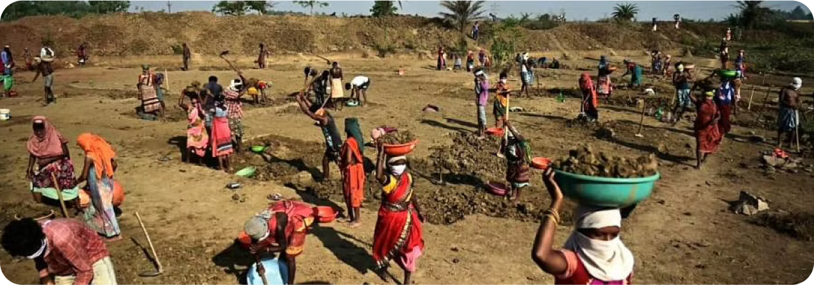

Village
Development
Subhash Chandra Foundation is working to improve the living conditions of socially and economically backward communities through its Village Development Program. Various strategic interventions in the space of education, health, agriculture and sports are undertaken to ensure holistic development of villages. Some of the key initiatives under health intervention includes facilitating development of a government hospital in the targeted village and creating awareness among the community on health and sanitation issues. Agriculture development also forms an integral part of the village development program and, the foundation is actively engaged to address agricultural challenges and improve agricultural productivity in the targeted villages. The foundation also
provides organic fertilizers to the farmer community with an objective to promote organic farming and sustainable farm practices.

A total of 161 farmers have been so far associated with this sustainable agriculture intervention. The foundation promotes and organizes various sports activities in the villages to attract children and youth towards the importance of physical fitness. Under this initiative, the foundation provides sports training & learning opportunity through community volunteers in the villages. Close to 500 children participated in the sports excellency program organized in the village in Hisar district, Haryana, out of which 3 girls from the village were also awarded with silver and gold medals in the district and state level tournament. These sports activities are changing the perspective of the village community towards relevance of sports and also empowering girls to come
forth to participate in these activities leading to an unbiased environment. The foundation is also facilitating the development of a sport training center for boxing, kho-kho, kabaddi and football to increase the scope of learning opportunities for children in the nearby areas.